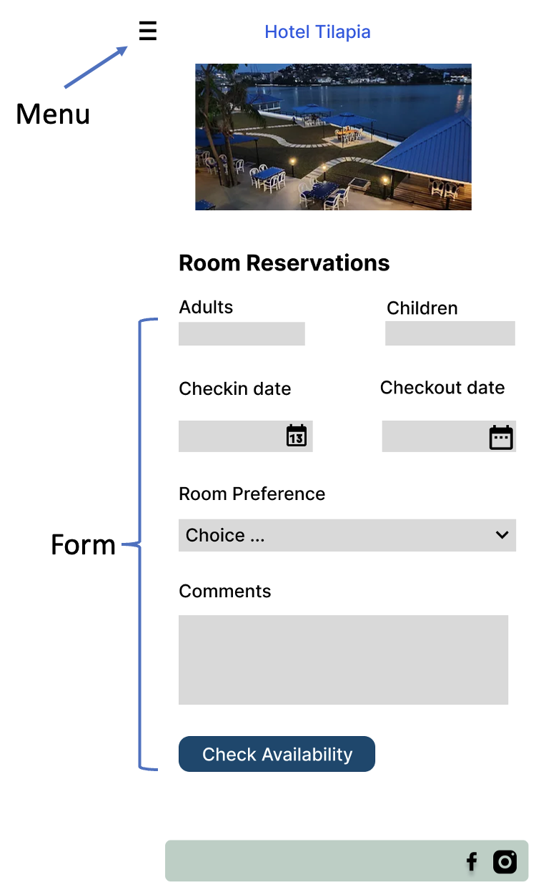
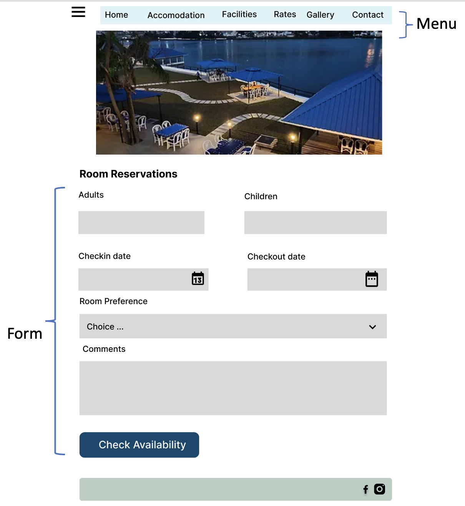
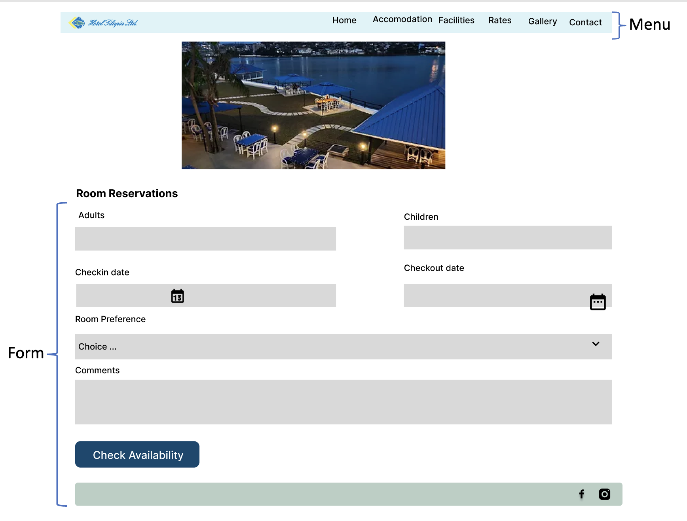

Project Overview
The project aims to identify design issues for the Tilapia Hotel Limited website. I imagine a busy tourist
who is very naive about online platforms and is in a hurry to check room availability for his family.
Before booking, users need to be assured of the availability, so they check using the form on the page.
I chose the page because it is an excellent interface to explore where usability problems might arise and
how users might unknowingly be unaware of such issues. Despite being accessible, the interface presents several
challenges for users (especially first-time users). This work aims to improve the online experience for tourists
to meet their daily needs during vacations abroad. Users reveal booking a room as something that reflects their
everyday experience; they check/ask for availability and then make a booking. This is what I incorporate into the interface.
The Problem
The site looks confusing, with many images, button placement, and the main menu at the top and bottom of the page, which could hinder learnability. While images can aid memorability, the site uses many for no good reason, which could lead to confusion for users. In terms of efficiency, the site presents a bottleneck; users might spend considerable time wondering how to navigate the site. Users' conceptual model does not align with the website; it allows them to contact them when they want to make decisions on the fly. Running WebAIM identified issues related to empty labels, low contrast between text and background colours, and missing first-level headings. The most significant one was that the page was not responsive.
Design Approach
In the design process, we follow the standard rule. We design Lo-fi diagrams to depict the interface we want. From those lo-fi's, we develop hi-fi images of how exactly we want our website to look. The interfaces presented here are for mobile, tablet and desktop users.
Mobile Hi-Fi Prototype
Tablet Hi-Fi Prototype
Desktop Hi-Fi Prototype
Redesigned Tilapia Page
Lessons learned
In this project, we learned how to identify flaws in existing website interfaces, using design thinking to improve them and applying knowledge and skills from class to redesign them. The end goal is to enhance users' experience as they interact with these interfaces.